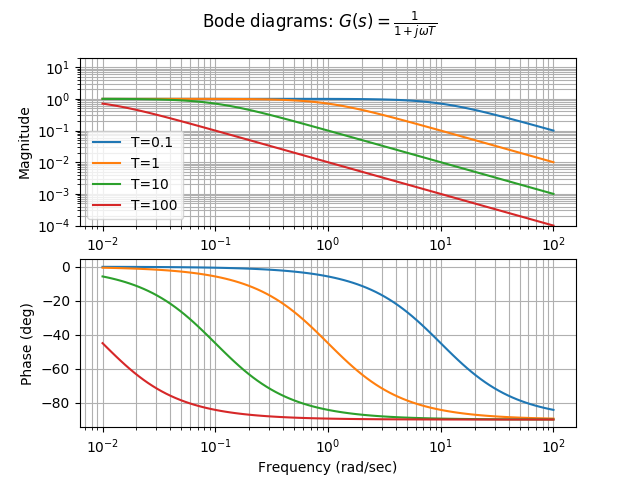
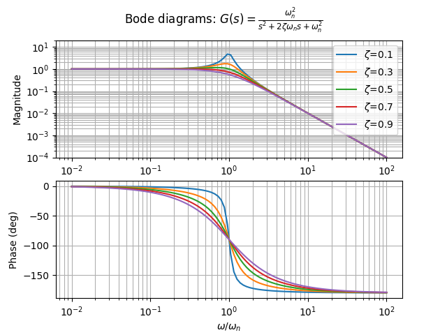

ボード線図（Bode diagram）
システムの周波数特性について考えるとき、入力周波数とゲイン・位相の関係をグラフで表現したものをボード線図と呼ぶ。
一般的に、横軸に各周波数の対数、縦軸にゲインのデシベル値もしくは位相を置く。
デシベル
電圧・音圧：
ボード線図には次のような利点がある。
- 広い周波数帯域を1つの図で扱える
- 複雑な伝達関数の周波数特性もボード線図の和として表現できる
- 折れ線近似が容易なため、周波数特性の概略が簡単に精度良く得られる
ボード線図の性質
あるシステムがある周波数 において伝達関数 を持つとき、
より
となる。
この式から、伝達関数の乗算（システムの直列結合）はボード線図の和算に相当することがわかる。そのため、基本的な伝達関数のボード線図上の形状がわかっていれば、複雑な伝達関数のボード線図も容易に書くことができる。
1次系のシステムのボード線図

Python 3.6.1, numpy 1.12.0, matplotlib 2.0.1, control 0.7.0
import numpy as np
from control import matlab
import matplotlib.pyplot as plt
#plotしたい周波数のリスト（指定しなければ自動で適当な範囲を描画してくれる）
omegas = np.logspace(-2, 2, 100)
for t in [0.1, 1, 10, 100]:
tf = matlab.tf([1], [t, 1]) #制御対象
matlab.bode(tf, omegas)
sp_gain = plt.subplot(211)
sp_gain.set_ylim(-40, 20)
plt.legend(('T=0.1', 'T=1', 'T=10', 'T=100'))
plt.suptitle('Bode diagrams: $G(s)=\\frac{1}{1+j\\omega T}$')
plt.show()
2次系のシステムのボード線図

import numpy as np
from control import matlab
import matplotlib.pyplot as plt
#plotしたい周波数のリスト（指定しなければ自動で適当な範囲を描画してくれる）
omegas = np.logspace(-2, 2, 100)
for z in [0.1, 0.3, 0.5, 0.7, 0.9]:
tf = matlab.tf([1], [1, 2*z, 1]) #制御対象
matlab.bode(tf, omegas)
sp_gain = plt.subplot(211)
sp_gain.set_ylim(-40, 20)
sp_phase = plt.subplot(212)
sp_phase.set_xlabel('$\\omega/\\omega_n$')
plt.legend(('$\\zeta$=0.1', '$\\zeta$=0.3', '$\\zeta$=0.5', '$\\zeta$=0.7', '$\\zeta$=0.9'))
plt.suptitle('Bode diagrams: $G(s)=\\frac{\\omega_n^2}{s^2+2\\zeta \\omega_n s + \omega_n^2}$')
plt.show()